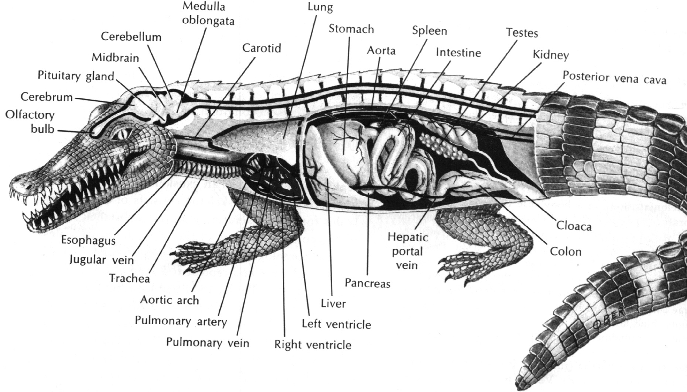
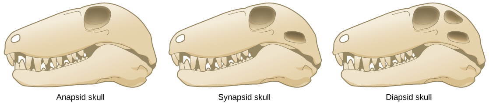

三、爬行纲的分类
现代爬行动物有 6300 多种，分为四个目：喙头目、龟鳖目、有鳞目和鳄目。其中最长的种类是网斑蟒，体长达 10m；最小的要算华美球趾虎，体长仅 34mm；最古老的种类则是喙头蜥，有"活化石"之称。
（一）喙头目（Rhynchocephalia）
现存爬行类中最古老的类群，仅留一种——喙头蜥（又称楔齿蜥）。属双颞窝类，具有位于头骨中部的顶眼（第三只眼），寿命可达 300 年之久。是著名的"活化石"。
（二）龟鳖目（Chelonia / Testudines）
有由真皮衍生的骨质板形成的背甲和腹甲，并与脊椎骨和肋骨相愈合；胸廓不能活动（因背甲愈合），颈椎和尾椎是游离的；无齿，靠颌鞘取食。生活在热带和亚热带的陆地、淡水和海水中；水生种类上岸产卵，产于沙坑中。包括各种龟和鳖。
（三）有鳞目（Squamata）
双颞窝，体被角质鳞片，能适应干旱贫瘠的环境。约有 6000 种，分蜥蜴亚目和蛇亚目。
1. 蜥蜴亚目（Lacertilia）
一般具有发达的四肢，趾指端具爪，有长尾，具有能活动的眼睑和外耳，少数种类四肢退化。颞上窝保留，颞下窝失去。约 3000 种，运动方式多样：行走（巨蜥）、滑翔（斑飞蜥）、奔跑（石龙子）、攀缘（壁虎）、游泳（海鬣蜥）、穴居（蠕蜥）等。
许多种类的尾能自断，作为一种避敌方式，断后还能再生，但不能和原来等长。
代表：大壁虎，体长达 35cm 以上，指趾端的足垫上有大量微小刚毛，可吸附在任何平面上（范德华力）。
2. 蛇亚目（Serpentes / Ophidia）
身体细长，四肢、胸骨、肩带均退化（无四肢、无胸骨、无膀胱），以腹部贴地爬行。围颞窝的骨片全部失去而不存在颞窝。脊椎骨数目多，可达 500 多块，犁鼻器发达。全世界约 3000 种。
运动方式：侧面波浪运动（S形前进）、直线爬行（腹鳞支撑＋皮肤肌牵引）、侧形运动（窄通道）、侧向行进。皮肤肌发达，从肋骨连至皮肤牵引腹鳞辅助爬行。
特化的头骨：左右下颌骨不愈合，以韧带松弛连接，一些骨块彼此形成能动关节，使口可开达 130° 角，能吞食比头大好几倍的食物；对地面微弱振动极敏感。
毒蛇：全世界 650 多种毒蛇。牙齿为端生齿；毒蛇上颌骨生有大型管状或沟状毒牙，基部有导管与毒腺相连，咬住时毒腺外围肌肉收缩使毒液排出。
（四）鳄目（Crocodilia）——最高等的爬行动物
鳄目为双颞窝类，是最高等的爬行动物。体被角质鳞片，背部鳞片下有骨质板；具有完整的次生腭；心室几乎完全分隔（留潘氏孔）；胸、腹腔完全分开；具槽生齿，并有分化；小脑发达。
我国特有的一级保护动物——扬子鳄，产于长江中下游。

| 目名 | 颞窝类型 | 代表/特征 | 地位 |
|---|---|---|---|
| 喙头目 | 双颞窝 | 喙头蜥，有顶眼，寿命300年 | 最古老，活化石 |
| 龟鳖目 | 无颞窝 | 骨板（真皮），胸廓不能动，无齿用颌鞘 | 特化类群 |
| 有鳞目 | 双颞窝 | 蜥蜴亚目（有四肢眼睑外耳）+ 蛇亚目（无四肢胸骨膀胱） | 种类最多（约6000种） |
| 鳄目 | 双颞窝 | 完整次生腭，心室近全分（潘氏孔），槽生齿，扬子鳄 | 最高等 |
齿型比较（拓展考点）：端生齿（蛇类，齿着生在颌骨上端）→ 侧生齿（蜥蜴，齿着生在颌骨内侧缘）→ 槽生齿（鳄类，齿着生在颌骨齿槽内，最进步，类似哺乳类）。
（五）爬行类的进化特征和地位
进化特征：产生了与陆栖生活真正适应的相应结构（羊膜卵、角质鳞、次生腭、胸廓、后肾、体内受精等）。
进化地位：起源于古代石炭纪末期类似于两栖的、四足类的一个类群，并由此产生出恒温的鸟类和哺乳类两大类动物。
爬行类在古代末期的三大分支演化：
- 无颞类 → 龟鳖类
- 合颞类 → 哺乳类
- 双颞类 → 其他的爬行动物和鸟类

爬行纲分类考点速记
四目＝喙头目（最古老·活化石·顶眼）、龟鳖目（无颞窝·骨板·无齿）、有鳞目（蜥蜴亚目＋蛇亚目，最多）、鳄目（最高等·完整次生腭·潘氏孔·槽生齿·扬子鳄）。蛇亚目"三无"：无四肢、无胸骨、无膀胱。三大演化分支：无颞→龟鳖，合颞→哺乳，双颞→其他爬行＋鸟。